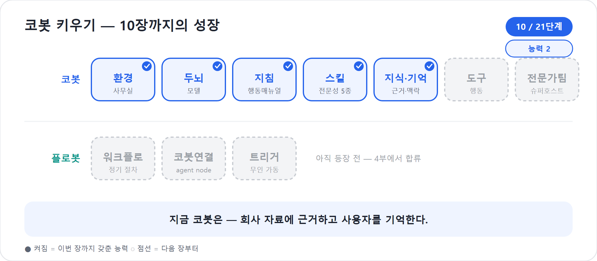

10장. 교과서와 기억하는 동료 — 지식과 기억을 단다
9장에서 코봇은 일하는 법을 배웠다. 기획서를 쓰고 일정표를 짜고, 예산과 리스크를 거쳐 보고서로 묶는 순서를 손에 넣었다. 그러나 절차를 안다고 해서 좋은 산출물이 저절로 나오지는 않는다. 회사마다 기획서 양식이 다르고, 과거 프로젝트에서 쌓인 교훈이 다르며, 같은 “워크숍”이라도 인사팀이 보는 관점과 마케팅팀이 보는 관점이 다르다. 그 자료를 모른 채 일반론만 늘어놓는 코봇은 똑똑하지만 우리 회사를 모르는 외부 컨설턴트와 같다.
이 장에서는 코봇에게 세 가지를 달아준다. 참고할 지식(Knowledge), 나를 기억(Memory)하는 능력, 그리고 Microsoft 365·조직 데이터의 살아 있는 맥락을 열어주는 Microsoft IQ다. 새 에이전트 경험의 Build 탭에서 이 셋은 각각 독립된 구성요소 버튼으로 나란히 놓인다 — 한 표면에 있을 뿐 서로 다른 버튼이다. 하지만 한 화면에 나란히 있다고 해서 같은 능력은 아니다. 지식은 코봇이 읽는 교과서이고, 기억은 코봇이 나에 대해 간직하는 메모이며, Microsoft IQ는 조직이 실제로 돌아가는 방식을 비추는 창이다. 이 셋을 헷갈리지 않는 것이 10장의 핵심이다.
2026년 기준 주의
이 장은 Microsoft Learn의 새 에이전트 경험 문서와 Knowledge 관련 문서를 기준으로 쓴다. Knowledge, Microsoft IQ, Memory는 미리보기와 초기 출시가 섞여 빠르게 변하는 영역이다. 화면 이름과 한도는 2026년 6월 기준으로 이해하고, 운영 전에 현재 테넌트의 UI와 관리자 정책을 확인한다.
〈10-1〉 지식 — 코봇의 교과서이자 사내망
Knowledge는 읽기 전용 참고 자료다. 코봇은 지식으로 연결된 문서와 데이터를 찾아 답의 근거로 삼는다. 도서관에서 책을 펴 읽고 인용하되, 책장을 찢거나 새 문장을 써넣지는 않는 것과 같다. 그래서 회사의 표준 기획서 템플릿, 과거 프로젝트 회고, 예산 가이드, 워크숍 운영 체크리스트를 지식으로 연결하면 코봇의 산출물이 비로소 “우리 회사답게” 바뀐다.
여기서 “읽기 전용”이라는 말은 아주 중요하다. SharePoint 문서를 Knowledge로 연결했다고 해서 코봇이 그 문서를 수정하는 것은 아니다. Dataverse 테이블을 지식으로 연결했다고 해서 레코드를 새로 만들거나 갱신하는 것도 아니다. 그런 행동은 11장의 도구(Tool)가 맡는다. Knowledge는 근거를 찾고, Tool은 행동한다. 이 경계를 일찍 잡아두면 설계가 깨끗해진다.
신버전 Copilot Studio의 Build 탭은 에이전트의 핵심 능력을 한 표면에 모은다. Instructions는 정체성, Skills는 일하는 법, Knowledge는 읽을 자료, Tools는 행동, Connected agents는 전문가 위임이다. 지식을 붙이는 흐름은 대체로 다음과 같다.
- Copilot Studio에서 새 경험으로 만든 코봇을 연다.
- Build 탭에서 Knowledge 구성요소를 찾는다.
- Add knowledge를 선택한다.
- 자료 성격에 맞는 소스를 고른다.
- 이름과 설명을 쓴다. 설명은 코봇이 “언제 이 소스를 찾아야 하는지” 판단하는 신호다.
- Add to agent로 추가한 뒤, 상태가 준비될 때까지 기다린다.
- Preview에서 실제 질문을 던지고, 답변이 어떤 소스와 인용을 사용했는지 확인한다.
설명은 Skill에서만 중요한 것이 아니다. Knowledge에도 설명이 필요하다. “워크숍 자료”보다 “사내 워크숍 기획서 템플릿, 예산 항목, 장소 예약 체크리스트를 포함한 운영 표준”이 훨씬 낫다. 코봇은 설명을 보고 어떤 자료를 찾아야 할지 고른다. 관련 없는 지식이 많아질수록 설명의 품질이 답변 품질을 좌우한다.
코봇 한마디
"저는 교과서를 읽어 근거를 찾지만, 책장을 고치지는 않아요. 회사 문서를 참고하게 하고 실제 수정이나 등록은 도구에게 맡기면 설계가 깔끔해집니다!"
어떤 교과서를 줄 것인가
코봇에게 연결할 수 있는 지식 소스는 자료의 위치와 성격에 따라 달라진다. 모든 목록을 외울 필요는 없다. “이 자료는 어디에 있고, 누가 볼 수 있으며, 얼마나 구조화되어 있는가”만 묻자.
| 소스 | 어울리는 자료 | 2026년 기준 확인한 특징 |
|---|---|---|
| Public website(Featured) | 공개 제품 문서, 공개 규정, 외부 행사 안내 | Bing 기반 그라운딩을 사용한다. URL은 공개되어 있고 Bing에 색인되어야 한다. |
| Uploaded documents | PDF, Word, Excel, PowerPoint 등 파일 | Add knowledge 대화상자 맨 위에 항상 있는 업로드 영역으로 붙인다. Dataverse에 안전하게 저장·색인된다. |
| SharePoint(Featured) | 팀 문서, 템플릿, 회의록, 정책 문서 | 사용자의 Microsoft Entra ID 권한으로 접근한다. 사이트·라이브러리·특정 파일 단위로 연결한다. |
| ServiceNow(Featured) | IT/서비스 관리 지식베이스 문서 | ServiceNow 지식베이스를 선택하면 그 안의 문서를 통째로 참고 자료로 색인한다. |
| Confluence(Advanced) | 팀 위키, 협업 문서 | Confluence 워크스페이스의 지식베이스 문서를 참고 자료로 연결한다. |
| Copilot connectors | Jira, Azure DevOps Work Items 등 비Microsoft 서비스 데이터 | Jira는 이슈·버그·트래킹 콘텐츠를, Azure DevOps는 워크아이템·백로그 콘텐츠를 Microsoft 365용으로 색인해 가져온다. |
| Dataverse | 프로젝트 대장, 고객 레코드, 승인 상태 같은 구조화 데이터 | Dataverse 테이블을 쿼리해 구조화 데이터를 답의 근거로 쓴다. |
| Azure AI Search | 대량 문서 컬렉션, 벡터 검색, 자체 검색 인덱스 | 이미 구축된 Azure AI Search 인덱스를 연결해 엔터프라이즈 규모 검색에 대응한다. |
2026년 기준 주의 — 파일 크기·개수 같은 정확한 한도는 소스 종류와 테넌트에 따라 다르고 자주 바뀐다. 본문 숫자보다 게시 전 Add knowledge 화면에서 실제 한도를 확인하는 습관이 먼저다.
함정
Public website에 사내 SharePoint 주소를 넣으면 안 된다. 공개 웹사이트 지식은 공개되어 있고 Bing에 색인된 콘텐츠를 전제로 한다. SharePoint, Teams Wiki, 사내 포털처럼 로그인해야 하는 자료는 SharePoint나 Copilot connectors 쪽으로 연결해야 한다.
우리 예제의 코봇에게는 세 가지 지식이 특히 유용하다. 첫째,
SharePoint의 프로젝트-운영-표준 폴더다. 여기에는 기획서
템플릿, 일정표 양식, 상태보고서 예시가 들어 있다. 둘째, Dataverse의
Project Register 테이블이다. 프로젝트명, 예산 한도, 승인
상태, 담당 부서 같은 구조화 정보가 있다. 셋째, 공개 행사장 이용 규정
웹페이지다. 본사 강당 사용 시간, 외부 방문자 안내 같은 공개 규정은
Public website로도 충분하다.
이렇게 붙이면 9장에서 만든 Skill이 더 잘 작동한다.
project-planner는 회사 기획서 템플릿을 보고 항목을 맞춘다.
budget-resource는 과거 프로젝트 예산 항목을 참고해 원화
추정을 현실적으로 잡는다. reporter는 상태보고서 예시를 보고
경영진이 익숙한 형식으로 요약한다. Skill이 “일하는 법”이라면 Knowledge는
“우리 회사에서는 그 일을 어떤 자료를 보고 하는가”다.
더 보기 — 연결할 수 있는 지식 소스의 전체 목록과 상황별 선택 기준은 부록 E의 E4·E5에 정리돼 있다. 입력 한도·미리보기 상태처럼 자주 바뀌는 값은 컴패니언 사이트의 「연결할 수 있는 지식 소스」에서 갱신한다.
실제로 지식 하나를 붙여 보자
사내 워크숍 프로젝트를 예로 들어 SharePoint 지식을 붙이는 장면을 그려 보자.
- 코봇의 Build 탭에서 Knowledge를 연다.
- Add knowledge를 누르고 SharePoint를 선택한다.
https://contoso.sharepoint.com/sites/project-office/workshop-templates같은 사이트나 폴더 URL을 입력한다.- 이름은
workshop-project-standards처럼 좁게 쓴다. - 설명에는 “사내 워크숍 프로젝트의 기획서 템플릿, 예산 항목, 장소 예약 체크리스트, 상태보고서 예시를 포함한다. 사용자가 워크숍 기획·일정·예산·보고 형식을 요청할 때 참고한다.”라고 적는다.
- Add to agent를 선택한다.
- Preview에서 “80명 규모 사내 워크숍 기획서 초안을 회사 양식으로 만들어줘”라고 묻는다.
- 답변이 템플릿 항목을 반영하는지, 인용이나 근거가 올바른지 확인한다.
지식 추가에서 자주 놓치는 것은 설명과 테스트 질문이다. 설명이 흐리면 코봇이 이 소스를 언제 써야 하는지 모른다. 테스트 질문이 너무 일반적이면 지식 연결이 잘됐는지 확인하기 어렵다. “워크숍 알려줘”보다 “회사 표준 기획서 양식으로 사내 워크숍 기획서를 만들어줘”가 훨씬 좋은 테스트다.
팁
지식 소스 이름은 사람이 관리하기 쉬운 이름이어야 한다.sharepoint1,file-final-final같은 이름은 한 달 뒤 자신에게 벌을 준다.workshop-template-sharepoint,project-register-dataverse,public-venue-policy처럼 위치와 용도를 함께 드러내자.
보안 트리밍 — 같은 질문, 다른 답
내부 지식을 붙일 때 가장 먼저 떠오르는 걱정은 보안이다. “코봇이 권한 없는 문서까지 보여주면 어떡하지?” Microsoft Learn의 Knowledge 요약 문서는 이 원칙을 분명히 한다. 에이전트 사용자가 질문할 때, 지식 소스는 그 사용자가 실제로 접근할 수 있는 콘텐츠만 표면화한다. 이를 사용자 단위 보안 트리밍(내가 못 보는 자료는 코봇도 못 봄)이라고 부른다.
예를 들어 같은 코봇에게 두 사람이 묻는다.
“지난 워크숍 예산을 참고해서 이번 워크숍 예산안을 만들어줘.”
PMO 팀원은 SharePoint의 과거 예산 파일과 Dataverse의 프로젝트 대장을 볼 권한이 있으므로, 코봇은 그 범위 안에서 답한다. 일반 참가자는 같은 파일을 볼 수 없으므로, 코봇은 공개된 템플릿이나 자신이 접근 가능한 자료만 근거로 삼는다. 같은 코봇, 같은 질문이어도 답의 근거 범위가 달라지는 것이다.
이 원칙은 편리하지만 만능은 아니다. 원본 권한 설계가 지저분하면 코봇의 답도 지저분해진다. “모두에게 열려 있는 폴더”에 민감한 예산 파일이 들어 있으면, 코봇은 그 권한을 그대로 따른다. AI 보안은 AI 화면에서만 해결되지 않는다. SharePoint, Dataverse, Entra ID, Purview의 기본 권한 정리가 먼저다. 이 이야기는 21장 거버넌스에서 다시 다룬다.
한 가지 더, ‘읽는 것’과 ‘다루는 것’은 다르다. 지금까지의 Knowledge는 문서에서 필요한 대목을 찾아 인용하는 검색에 가깝다. 그런데 코봇이 파일 자체를 더 깊이 다루는 힘도 자라고 있다. 수백 행짜리 예산 엑셀을 통째로 받아 합계와 이상치를 계산하고, 긴 계약서를 끝까지 훑어 조항을 비교하고, 표를 직접 집계해 답을 만드는 식이다. 회의록 검색이 “해당 문장을 찾아 인용”이라면, 이 능력은 “파일을 작업대에 올려놓고 직접 계산·정리”에 가깝다. 큰 파일과 표·수치가 많은 업무라면, 단순 지식 인용을 넘어 코봇이 파일을 직접 다루게 하는 길이 점점 넓어진다. 다만 무엇을 ‘읽기(Knowledge)’로, 무엇을 ‘다루기(작업)’로 맡길지는 여전히 설계자가 나눈다.
Microsoft IQ — 조직이 돌아가는 방식을 비추는 창
Knowledge가 내가 고른 특정 소스를 연결하는 일이라면, Microsoft IQ는 그보다 넓은 조직 맥락을 통째로 열어주는 별도의 능력이다. Build 탭에서 Microsoft IQ는 Knowledge와 나란히 있는 독립된 버튼이다. 무엇을 볼지 하나하나 지정하는 대신, 사용자의 현재 맥락과 권한에 따라 필요한 조직 데이터가 그때그때 흘러 들어온다는 점이 Knowledge와 가장 다르다.
Microsoft Learn은 이 차이를 다음과 같이 정리한다.
| 구분 | Knowledge | Microsoft IQ |
|---|---|---|
| 데이터 성격 | 정적·준정적 콘텐츠 | 동적인 Microsoft 365 조직 데이터 |
| 설정 방법 | 소스를 하나하나 골라 연결 | 소스를 켜고 끄는 토글 |
| 범위 | 내가 지정한 특정 문서·사이트 | 사용자가 접근 가능한 M365 데이터 전체 |
| 할 수 있는 일 | 읽기만(read-only) | 읽기 + 행동(메일 초안 작성 등) |
Microsoft IQ는 세 축으로 나뉜다.
| 축 | 무엇을 비추나 |
|---|---|
| Work IQ | 메일·채팅·파일·업무 활동 — Microsoft 365 협업 신호 |
| Fabric IQ | Microsoft Fabric의 비즈니스 데이터·분석 — 회사 숫자의 의미 |
| Foundry IQ(미리보기) | Azure AI Search로 색인한 엔터프라이즈 지식베이스 |
이 책의 코봇 예제에는 Work IQ가 가장 먼저 와닿는다. Work IQ를 켜면 다음 7가지 세부 소스를 각각 토글할 수 있다.
| Work IQ 소스 | 코봇이 할 수 있는 일 | 기본값 |
|---|---|---|
| 메일함 검색, 메일 읽기, 답장 초안 작성 | 꺼짐 | |
| Calendar | 일정 조회, 회의 시간 확인 | 꺼짐 |
| Teams | Teams 메시지·채널 검색 | 꺼짐 |
| OneDrive and SharePoint | OneDrive·SharePoint 파일 검색·참조 | 꺼짐 |
| User profile and people | 조직도·담당자 정보 조회 | 켜짐 |
| Microsoft 365 Copilot Search | M365 전반에 걸친 통합 검색 | 켜짐 |
| SharePoint Lists | SharePoint 목록 데이터 조회 | 꺼짐 |
Microsoft IQ를 켠다고 일곱 소스가 한 번에 다 열리는 것은 아니다. User profile과 M365 Copilot Search만 기본으로 켜져 있고, 나머지 다섯은 필요할 때 하나씩 켠다. 사내 워크숍 코봇이라면 Mail·Calendar·OneDrive and SharePoint 정도만 켜서 “최근 관련 메일이 있었나”, “이번 주 회의는 언제인가”, “관련 파일이 OneDrive에 있나”를 답하게 하는 편이 목적에 맞고 안전하다.
Fabric IQ와 Foundry IQ는 데이터 분석팀이나 엔터프라이즈 지식관리팀이 붙이는 경우가 많다. 이 책의 러닝 예제에서는 다루지 않지만, 전사 데이터 조직이거나 이미 Azure AI Search로 큰 지식베이스를 운영 중이라면 확장 경로로 기억해 두자. 세 축의 상세 목록과 연결 절차는 부록 E의 E4-1에 정리한다.
함정
Microsoft IQ를 Tools 메뉴의 MCP 커넥터 목록에서 고르는 것으로 착각하기 쉽다. 이 장 기준으로는 Build 탭의 Microsoft IQ 버튼에서 소스를 켜는 것이 기본 경로다. 11장에서 다루는 Tools/MCP는 별도 경로이니 두 화면을 혼동하지 않는다.
쉬운 풀이 — Microsoft IQ
조직의 메일·일정·채팅·파일·비즈니스 데이터·지식베이스를 사용자 권한 그대로 비추는 층. Knowledge처럼 내가 문서를 골라 붙이는 게 아니라, 상황에 맞게 알아서 열리는 창이다.
현장에서
“Knowledge만 붙였는데 왜 회의 맥락까지 알아서 요약하지 않죠?”라는 질문이 자주 나온다. 특정 SharePoint 폴더를 연결하는 것과 Microsoft IQ가 Microsoft 365 전반의 업무 맥락을 활용하는 것은 다른 버튼, 다른 층이다. 자료 폴더를 읽게 할 것인지, 조직의 업무 신호까지 활용하게 할 것인지 의도적으로 구분하자.
"SharePoint 책장은 제가 골라 읽는 자료고, Microsoft IQ는 필요할 때 알아서 열리는 회사의 창이에요. Build 탭에서도 둘은 서로 다른 버튼이랍니다!"
〈10-2〉 기억 — 나를 기억하는 동료
지식이 바깥의 자료를 읽는 능력이라면, Memory는 나와의 상호작용에서 생긴 지속 맥락이다. “나는 이 프로젝트의 PM이다”, “우리 팀은 금요일 오전에 주간 보고를 선호한다”, “예산은 원화 표로 보고 싶다” 같은 사실을 코봇이 다음 대화에서도 활용하는 능력이다. 매번 처음부터 자기소개를 하지 않아도 되는 동료를 떠올리면 된다.
Preview 데모에서 흔히 보이는 장면은 단순하다. 사용자가 말한다.
“코봇, 기억해줘. 나는 이번 사내 워크숍의 PM이고, 보고서는 금요일 오전에 받고 싶어.”
새 대화를 열고 다시 묻는다.
“내가 맡은 프로젝트에서 다음 보고는 언제가 좋아?”
Memory가 작동하면 코봇은 “사용자는 사내 워크숍 PM이며 금요일 오전 보고를 선호한다”는 맥락을 참고한다. 이것은 SharePoint 문서를 검색한 결과가 아니다. 사용자와의 상호작용에서 저장된 개인화 맥락이다.
Memory는 편리하지만 민감하다. Microsoft 365 Copilot의 Memory 문서는 개인화와 기억이 미리보기이며, 저장된 기억과 채팅 기록에서 추론된 세부 정보, 사용자 지정 지침이 사용자 메일박스의 숨김 폴더에 저장된다고 설명한다. 사용자는 개인화 설정에서 저장된 기억을 관리·삭제할 수 있고, 관리자는 테넌트 수준에서 개인화 제어를 다룰 수 있다. Copilot Studio의 에이전트 Memory도 “켜면 편리하니 무조건 켠다”가 아니라, 어떤 맥락을 기억하게 할지 사용자와 조직이 이해한 상태에서 다뤄야 한다.
함정
Memory에 회사 정책 문서를 “넣어두자”고 생각하면 설계가 틀어진다. 정책 문서는 Knowledge다. Memory는 사용자 선호와 반복 맥락을 저장하는 곳이다. 반대로 “나는 PM이다” 같은 개인 맥락을 SharePoint 문서로 만들 필요도 없다.
지식과 기억을 헷갈리지 않기
이 둘은 자주 뒤섞인다. “왜 내 SharePoint 문서를 기억하지 못하지?”라는 불평도, “왜 코봇이 내가 PM이라는 걸 문서에서 찾아야 하지?”라는 혼란도 여기서 나온다. 회사 문서를 근거로 답하는 것은 Knowledge의 몫이고, 사용자에 대한 반복 맥락을 간직하는 것은 Memory의 몫이다. Knowledge는 너를 기억하지 않고, Memory는 회사 문서를 대신하지 않는다.
| 구분 | Knowledge(지식) | Memory(기억) |
|---|---|---|
| 비유 | 교과서, 사내망, 문서 보관소 | 나를 기억하는 동료의 메모 |
| 대상 | 회사·웹·업무 시스템의 자료 | 사용자 선호, 역할, 반복 대화 맥락 |
| 성격 | 읽기 전용 근거 | 개인화된 지속 맥락 |
| 보안 | 원본 권한과 사용자 단위 보안 트리밍 | 개인화·프라이버시 설정과 관리자 제어 |
| 예 | 기획서 템플릿, 과거 회고, Dataverse 프로젝트 대장 | “나는 PM”, “금요일 보고 선호”, “원화 표기 선호” |
| 다음 장 연결 | 자료를 수정하려면 Tool이 필요 | 기억을 바탕으로 Tool을 더 적절히 실행할 수 있음 |
코봇의 프로젝트 운영으로 다시 연결해 보자. SharePoint 지식은 코봇에게 회사 기획서 양식을 알려준다. Dataverse 지식은 프로젝트 대장과 승인 상태를 알려준다. Work IQ는 회의·메일·업무 신호를 통해 현재 프로젝트의 살아 있는 맥락을 더 잘 이해하게 한다. Memory는 “사용자는 이 프로젝트의 PM이고, 보고는 금요일 오전을 선호한다”는 개인 맥락을 이어준다. 네 능력이 섞일 때 코봇은 비로소 “우리 회사에서 나와 함께 일하는 동료”가 된다.
좋은 지식 설계의 작은 원칙
지식을 많이 붙인다고 코봇이 무조건 똑똑해지지는 않는다. 관련 없는 책이 가득한 책장은 신입을 도와주기보다 방해한다. Knowledge 설계의 기본 원칙은 좁게, 선명하게, 검증 가능하게다.
| 원칙 | 나쁜 예 | 좋은 예 |
|---|---|---|
| 좁게 붙인다 | 회사 전체 SharePoint 루트를 통째로 연결 | 프로젝트 운영 표준 폴더, 워크숍 템플릿 폴더만 연결 |
| 설명을 쓴다 | “문서 모음” | “사내 워크숍 기획·예산·보고 템플릿. 워크숍 프로젝트 산출물 작성 시 사용” |
| 권한을 먼저 정리한다 | 민감 자료가 모두 열람 폴더에 섞임 | PMO, 재무, 일반 사용자 권한을 폴더·테이블 단위로 분리 |
| Preview로 확인한다 | “잘 되겠지” 하고 게시 | 대표 질문 5개로 어떤 소스가 쓰였는지 확인 |
| 행동과 분리한다 | “이 문서를 읽고 수정해”를 Knowledge에 기대 | 읽기는 Knowledge, 수정·업로드는 Tool로 설계 |
작은 사례
한 교육팀은 “교육 자료”라는 SharePoint 사이트 전체를 코봇에게 연결했다. 코봇은 워크숍 기획서 질문에 신규입사자 교육 자료와 보안 교육 자료를 섞어 답했다. 지식 소스를workshop-templates,venue-rules,budget-guidelines세 개로 쪼개고 설명을 구체화하자 답변이 안정됐다. 바뀐 것은 모델이 아니라 책장 정리였다.
"지식은 회사의 교과서, 기억은 사용자에 대한 제 메모예요. 두 가지가 만날 때 저는 처음 보는 상담원이 아니라 함께 일해 온 동료처럼 움직입니다!"
핵심 정리
| # | 요점 |
|---|---|
| 1 | Knowledge는 읽기 전용 근거다. 문서와 데이터를 찾아 답하지만 원본을 수정하지 않는다. |
| 2 | Knowledge, Microsoft IQ, Memory는 Build 탭에서 각각 독립된 구성요소지만 한 표면에 나란히 있어 헷갈리기 쉽다. |
| 3 | Public website, Uploaded documents, SharePoint, ServiceNow, Confluence, Copilot connectors, Dataverse, Azure AI Search는 자료의 위치와 성격에 맞춰 고른다. |
| 4 | 내부 지식은 사용자 단위 보안 트리밍을 따른다. 코봇은 사용자가 볼 권한이 있는 내용만 근거로 삼는다. |
| 5 | Microsoft IQ는 Work IQ·Fabric IQ·Foundry IQ 3개 축으로 구성된다. Work IQ는 Mail·Calendar·Teams·OneDrive and SharePoint·People·M365 Copilot Search·SharePoint Lists 7개 세부 소스를 개별적으로 켤 수 있고, 기본으로는 People과 M365 Copilot Search만 켜져 있다. |
| 6 | Memory는 사용자와 대화에 대한 지속 맥락이다. Knowledge가 회사 문서를 대신하고, Memory가 회사 문서를 대신하지 않는다. |
| 7 | 좋은 지식 설계는 많은 소스보다 좁은 범위, 좋은 설명, 권한 정리, Preview 검증에서 나온다. |
자주 묻는 질문(FAQ)
| 질문 | 답변 |
|---|---|
| 지식을 많이 연결할수록 똑똑해지나? | 아니다. 관련 없는 자료는 노이즈가 된다. 먼저 업무 단위로 좁게 붙이고, 설명을 정확히 쓰고, Preview에서 확인한다. |
| 코봇이 비밀 문서를 보여줄 수 있나? | 원칙적으로 Knowledge는 사용자 단위 보안 트리밍을 따른다. 다만 원본 권한이 잘못 열려 있으면 그 권한이 그대로 반영되므로 권한 정리가 먼저다. |
| Knowledge와 Memory의 가장 쉬운 구분은? | “회사 자료인가, 나에 대한 맥락인가”로 묻는다. 회사 자료는 Knowledge, 나의 역할·선호·반복 맥락은 Memory다. |
| 업로드 파일 한도는? | Microsoft Learn 기준 파일 하나는 512MB를 넘을 수 없고, 에이전트는 최대 500개 파일을 Knowledge로 포함할 수 있다. 지원 파일 형식과 제한은 현재 문서를 확인한다. |
| Public website에 사내 사이트를 넣어도 되나? | 로그인해야 하는 사내 사이트는 적합하지 않다. Public website는 공개되고 Bing에 색인된 웹 콘텐츠를 전제로 한다. 사내 문서는 SharePoint나 Copilot connectors로 연결한다. |
| 지식으로 읽은 문서를 고치게 할 수 있나? | Knowledge만으로는 못 한다. 문서 생성·수정·업로드·발송은 11장의 Tool 또는 4부의 Workflows로 설계한다. |
| OneDrive 파일은 Knowledge에서 붙이나? | 개별 SharePoint/OneDrive 문서를 콕 집어 붙이는 것은 Knowledge다. 사용자의 OneDrive 전체를 맥락에 따라 넘나들며 찾게 하려면 Microsoft IQ의 OneDrive and SharePoint 소스를 켠다. |
| Fabric IQ·Foundry IQ도 꼭 알아야 하나? | 이 책의 코봇 예제 수준에서는 몰라도 된다. 전사 데이터 분석(Fabric IQ)이나 대규모 엔터프라이즈 지식베이스(Foundry IQ)를 이미 운영 중인 조직이라면 그때 부록 E에서 찾아본다. |
다음 장에서는
지식과 기억으로 코봇은 우리 회사를 아는 동료가 되었다. 그러나 아직은 읽고 생각하고 말하는 능력에 가깝다. 기획서를 회사 양식으로 완성해도, 그 파일을 SharePoint에 올리고 담당자에게 알림을 보내고 Dataverse 상태를 바꾸는 일은 또 다른 능력이다. 11장에서는 코봇에게 도구, 곧 손발을 달아 생각한 것을 실제 행동으로 옮기게 만든다.
실습 — 코봇 키우기 10단계: 지식과 기억을 단다

〔이어받기〕 9장의 스킬 5종을 갖췄지만, 코봇은 아직 ‘아무 말’로 답할 수 있다. 근거와 맥락을 붙인다.
10-a. Knowledge를 연결한다. SharePoint의 ‘프로젝트 표준 템플릿’·‘과거 출시 프로젝트 아카이브’를 지식 소스로 연결 → 기획서가 근거를 인용해 작성되게 한다(아무 말 → 회사 자료 기반).
10-b. Memory를 켠다. “나는 이 프로젝트 PM이고 금요일 보고를 선호한다”를 한 번 말해 기억시키고, 다음 대화에서 다시 묻지 않는지 확인한다.
10-c. 경계를 콕 집는다. “왜 내 SharePoint 문서를 기억 못 해?”는 Knowledge(회사 자료 인용)와 Memory(너에 대한 사실 기억)를 섞은 오해다.
〔성장〕 코봇은 회사 자료에 근거하고 사용자를 기억한다 — ‘아무 말 하는 신입’에서 ‘맥락 아는 동료’로. 〔검증 포인트〕 기획서가 표준 템플릿 형식을 따르고, 두 번째 대화에서 PM 신분을 다시 묻지 않으면 통과.